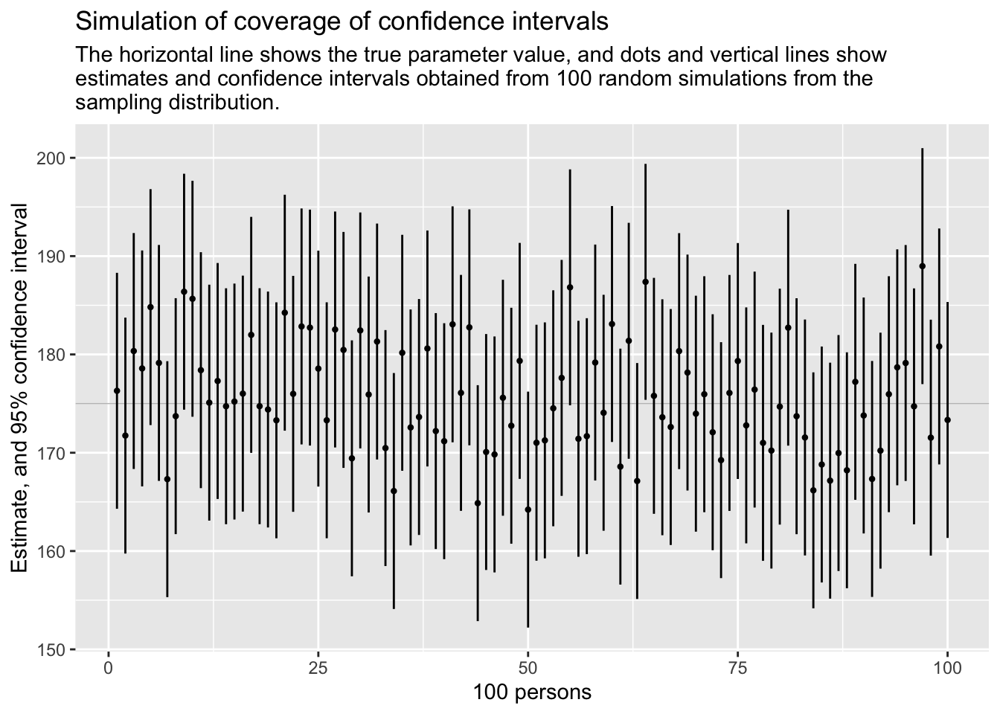
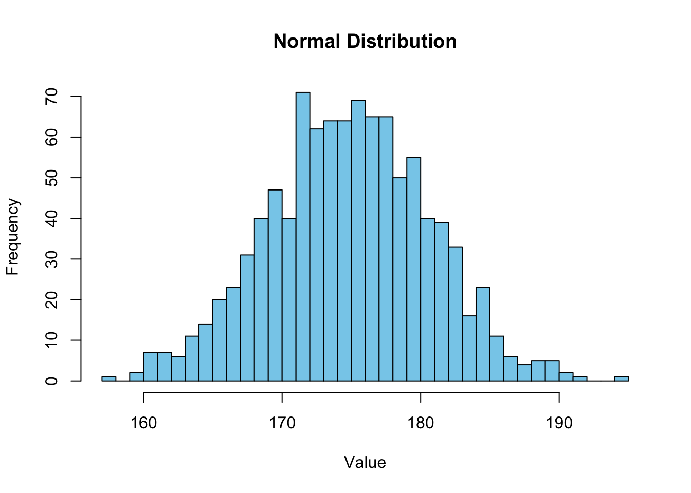
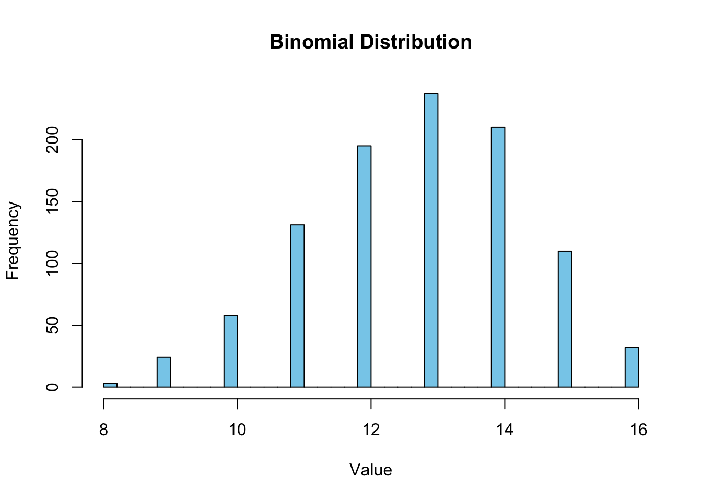
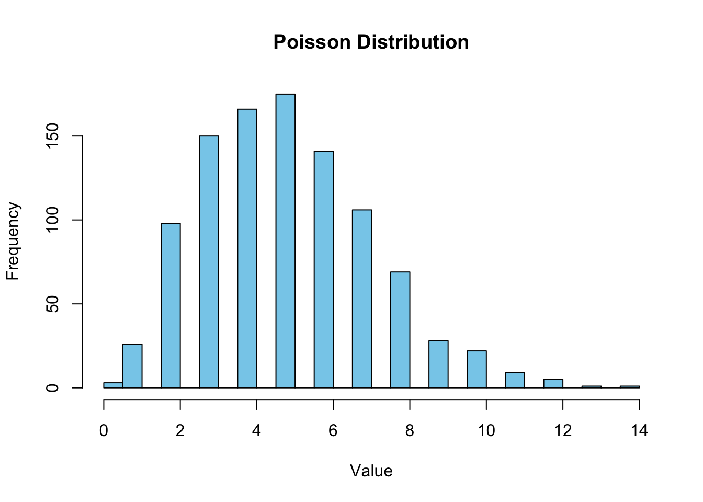
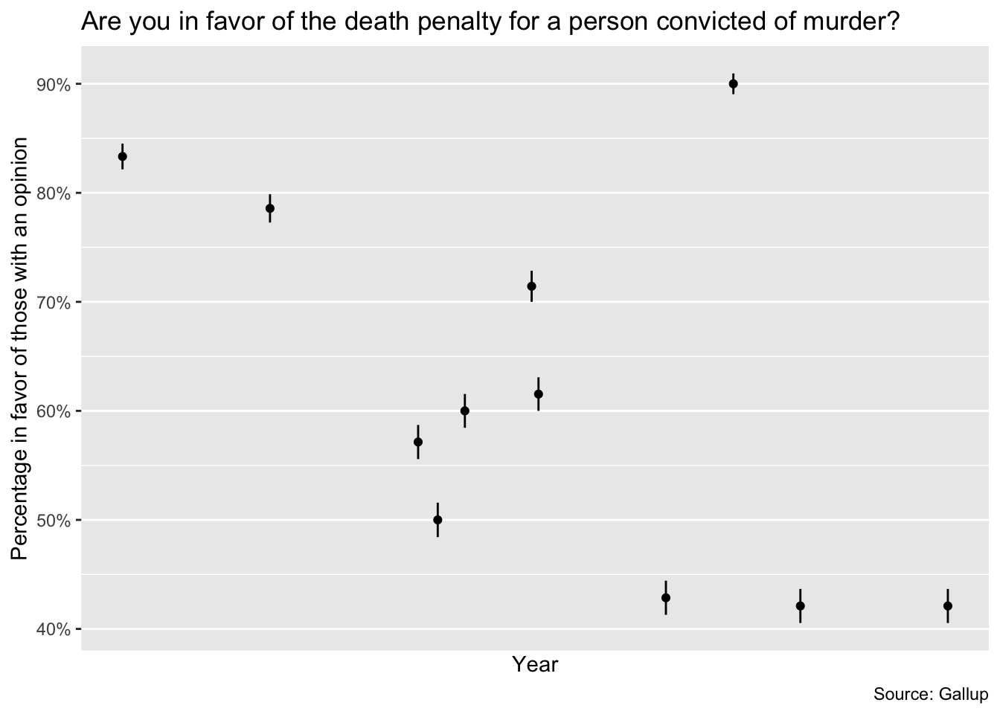
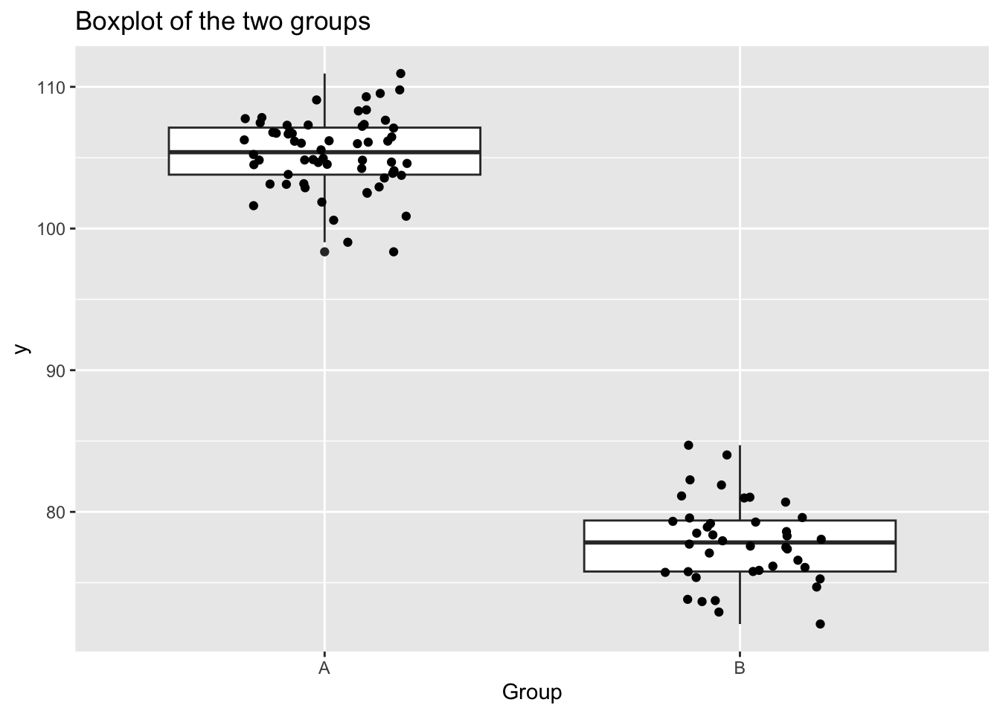
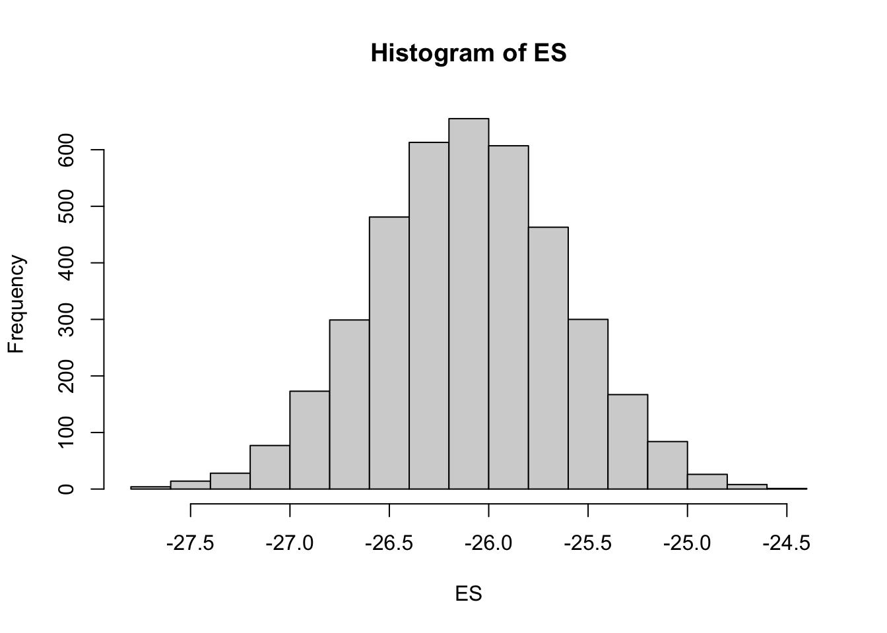
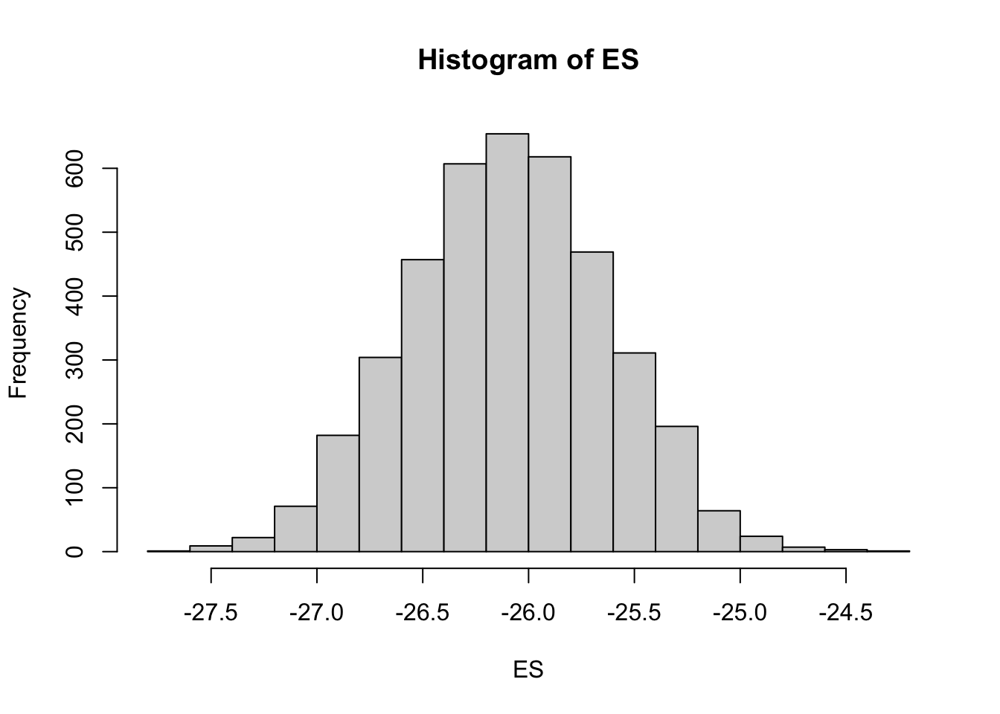

4 Statistical Inference
4.1 Summary
Statistical inference can be formulated as a set of operation on data that yield estimates and uncertainty statements about predictions and parameters of some underlying process of population. From a mathematical standpoint, these probabilistic uncertainty statements are derived based on some assumed probability model for observed data.
In this chapter:
- the basics of probability models are sketched (estimation, bias, and variance);
- the interpretation of statistical inferences and statistical errors in applied work;
- the theme of uncertainty in statistical inference is introduced;
- a mistake to use hypothesis tests or statistical significance to attribute certainty from noisy data are discussed.
Statistical inference is used to learn from incomplete or imperfect data.
- In the sampling model we are for example interested in learning some characteristics of a population from a sample.
- In the measurement model we are interested in learning about the underlying pattern or law.
- Model error refers to the inevitable imperferction of the model.
Some definitions are given. The sampling distribution is the set of possible datasets that could have been observed if the data collection process had been re-done, along with the probabilities of these possible values. It is said to be a generative model in that it represents a random process which, if known, could generate a new dataset. Parameters are the unknown numbers that determine a statistical model, e.g. \(y_i=a+bx_i+\epsilon_i\) in which the errors \(\epsilon_I\) are normally distributed with mean 0 and standard deviation \(\sigma\). Thre parameters \(a\) and \(b\) are called coeffients and \(\sigma\) is a scale or variance parameter.
The standard error (\(\sigma/ \sqrt{n}\)) is the estimated standard deviation of an estimate and can give us a sense of our uncertainty about the quantity of interest. The confidence interval represents a range of values of a parameter or quantity of that are roughly consistent with the data, given the assumed sampling distribution.
Bias and unmodeled uncertainty are also discussed. Roughly speaking, an estimate is unbiased if it is correct on average. Take into account that random samples and randomized experiments are imperfect in reality, and any approximations become even more tenuous when applied to observational data. Also, survey respondents are not balles drawn from an ure, and the probabilties in the “urn” are changing over time. So, improve data collection, expand the model, and increase stated uncertainty.
Performing data analysis is the possibility of mistakenly coming to strong conclusions that do not reflect real patterns in the underlying population. Statistical theories of hypothesis testing and error analysis have been developed to quantify these possibilities in the context of inference and decision making.
A commonly used decision rule that we do not recommend is to consider a result as stable or real if it is “statistically significant” and to taken “non-statistically” results to be noisy and to be treated with skepticism. The concepts of hypothesis testing are reviewed with a simple hypothetical example. Estimate, standard error, degrees of freedom, null and alternative hypotheses and p-value, as well as the general formulation, confidence intervals to compare results, and Type 1 and Type 2-errors, important in conventional hypthesis testing, are presented.
They present the problems with the concept of statistical significance (some examples are given):
- Statistical significance is not the same as practical significance;
- Non-significance is not the same as zero;
- The difference between “significant” and “non-significant” is not itself statistically significant;
- Statistical significance can be attained by multiple comparisons or multiple potential comparisons;
- The statistical significant estimates tend to be overestimated;
In this book they try to move beyond hypothesis testing. The most important aspect of their statistical method is its ability to incorporate more information into the analysis. General rules are:
- Analyse all your data;
- Present all your comparisons;
- Make your data public.
Bayesian methods can reduce now-common pattern of the researchers getting jerked around by noise patterns that happen to exceed the statistical significance threshold. We can move forward by accepting uncertainty and embracing variation.
4.2 Presentation
4.2.1 1. ESTIMATION
Set the true data-generating parameters (e.g mean 175 cm and sd=6 cm)
library(tidyverse)
n<-1000
mu<-175
sigma<-6
estimate<-mu/n
se<-sqrt(estimate*(1-estimate)/n)
estimate[1] 0.175se[1] 0.01201561This is figure 4.2 on page 52 of the ROS-book.

Let us look at different estimations using different distributions
Normal distribution
The Normal distribution, frequently encountered in real-world scenarios like IQ scores or heights in a population, exemplifies a symmetric bell-shaped curve. It symbolizes situations where most observations cluster around a central mean, with fewer occurrences as we move away from the center.
Let us generate a normal distribution in R
set.seed(4)
n<-1000
mu<-175
sd<-6
samplenorm <- rnorm(n=n, mean = mu, sd = sd)
print(samplenorm) [1] 176.3005 171.7450 180.3469 178.5759 184.8137 179.1357 167.3125 173.7211
[9] 186.3792 185.6612 178.3996 175.0943 177.2983 174.7292 175.2061 176.0142
[17] 181.9902 174.7348 174.3978 173.2993 184.2449 175.9910 182.8457 182.7295
[25] 178.5574 173.3023 182.5353 180.4590 169.4318 182.4411 175.9208 181.3116
[33] 170.4747 166.1069 180.1668 172.5729 173.6356 180.6046 172.2046 171.1747
[41] 183.0623 176.0892 182.7551 164.8717 170.0740 169.8271 175.5931 172.7461
[49] 179.3434 164.2157 171.0175 171.2576 174.5222 177.6137 186.8254 171.4194
[57] 171.6850 179.1758 174.0660 183.0934 168.5889 181.3867 167.1237 187.3822
[65] 175.7883 173.6099 172.6159 180.3366 178.1570 173.9724 175.9521 172.0860
[73] 169.2466 176.0831 179.3304 172.7828 176.4252 171.0045 170.2192 174.6898
[81] 182.7216 173.7151 171.5515 166.1756 168.8036 167.1609 169.9705 168.2161
[89] 177.2125 173.7892 167.3340 170.2119 175.9545 178.6888 179.1277 174.7177
[97] 188.9819 171.5346 180.8109 173.3348 179.1088 174.3093 172.8611 174.3654
[105] 175.2693 164.6430 184.3347 179.6585 168.4090 164.6319 177.5658 179.4674
[113] 180.1913 176.8320 174.3159 177.5419 170.2137 171.3748 185.2901 170.7043
[121] 174.2006 169.0014 186.2426 172.9757 180.8396 180.9270 169.3525 177.0951
[129] 171.4335 160.7065 181.4681 179.0095 169.2122 163.1486 171.4914 180.8157
[137] 178.3138 174.5071 164.9397 182.2756 181.0030 179.3160 169.9338 178.7319
[145] 170.6643 172.3031 167.8270 177.3428 171.9017 180.4592 180.2619 170.1028
[153] 184.2358 183.2472 172.1005 178.3021 169.8558 170.7582 162.4175 181.5966
[161] 177.0522 177.9450 169.4080 166.4326 180.8546 165.7220 175.1062 170.3517
[169] 173.6239 173.3537 185.7764 172.1313 171.4314 161.4524 185.0956 175.4337
[177] 172.3599 178.7594 170.2012 168.2321 168.8499 175.4264 177.2903 165.2645
[185] 186.4033 170.7029 177.2828 177.6451 176.5440 173.9233 170.8592 174.9975
[193] 178.3935 167.7475 172.9230 171.0988 169.6624 183.8622 167.8271 185.5030
[201] 182.2884 165.7132 173.1865 181.2352 170.3929 184.1480 160.4675 178.3380
[209] 181.6332 175.9986 173.6472 173.6295 173.4809 187.4096 184.4991 168.7445
[217] 174.9497 166.9955 175.8792 170.2731 173.2660 179.0010 174.1802 176.3445
[225] 181.7032 166.3690 178.8062 172.0048 181.7576 174.3989 168.3409 178.9475
[233] 174.7402 178.7703 169.3790 172.8557 174.7296 172.9117 172.8462 177.3737
[241] 169.0963 174.8638 169.6927 177.9102 170.0108 182.0389 175.3661 175.9405
[249] 177.8134 178.2710 177.3736 169.4718 170.9406 163.3366 175.7199 182.5965
[257] 168.4121 177.6274 178.6984 175.1072 167.5649 171.9747 182.9007 179.7666
[265] 177.9102 189.2262 173.3098 176.1940 179.8614 174.2664 181.0463 178.1055
[273] 173.6202 173.9942 160.1438 171.3931 175.1891 182.3567 170.8047 165.9751
[281] 173.6489 174.9464 166.1298 163.9135 169.9238 182.5345 166.8970 176.9429
[289] 175.7128 178.8977 179.0897 190.1051 176.8151 171.0171 175.3777 167.8740
[297] 172.4770 170.5143 174.2420 168.8880 157.9625 184.0688 183.6541 178.0322
[305] 170.4562 176.4954 173.0989 175.6175 173.7303 176.6233 173.1580 180.3392
[313] 177.3283 161.3537 171.7003 176.9823 171.4111 167.4277 179.5798 180.0458
[321] 175.9494 181.2790 171.0829 169.2357 173.7931 179.1615 169.0118 169.0022
[329] 172.8201 181.3460 181.4737 182.4280 180.1247 170.1188 172.7930 181.7061
[337] 175.6824 172.3328 166.3257 172.6933 178.5588 176.4703 164.5252 175.3745
[345] 168.4838 174.3549 177.7072 181.5662 180.4358 169.0149 170.7050 177.5356
[353] 177.5976 175.5072 178.3126 171.7734 175.7545 181.0233 181.4310 172.2979
[361] 180.7506 180.4259 167.6120 173.2573 165.0873 175.2245 162.7439 175.6676
[369] 176.8672 171.1666 180.5966 173.3639 182.4510 168.6359 186.3287 167.9914
[377] 177.5140 165.0851 176.0614 174.1365 189.1762 182.3018 177.4197 178.8258
[385] 169.6655 167.1088 176.0688 166.4572 165.9779 168.5476 175.8507 176.5732
[393] 182.1635 164.8786 176.4403 168.2528 169.8988 172.9676 174.6417 174.0767
[401] 167.9073 177.7376 173.5703 179.8730 170.6161 161.8343 181.0092 182.0043
[409] 179.6179 184.5279 177.1081 171.7940 173.2907 174.6837 175.3867 171.5280
[417] 174.9245 180.4340 171.9356 176.2941 171.4973 167.6979 176.0213 175.7865
[425] 173.5628 171.6011 175.2342 163.5333 174.8496 178.9904 182.9374 194.0451
[433] 163.7887 166.9112 188.8219 176.5329 180.2099 177.1350 168.1271 176.7753
[441] 170.8242 182.1101 184.1512 177.5251 184.3550 184.7708 176.0387 172.9651
[449] 167.3368 175.3625 168.1939 174.6198 170.6045 181.4442 183.8732 159.8019
[457] 170.0816 176.9132 169.1794 172.6834 174.7823 179.7242 177.5752 178.9389
[465] 170.5090 175.0712 171.3593 183.4359 171.2194 169.7519 167.8415 177.2060
[473] 170.7998 172.4473 181.0823 177.5232 182.9519 181.2662 171.0825 165.0413
[481] 165.9402 176.8773 163.6139 171.3688 172.8938 168.9379 172.3095 180.2082
[489] 175.4747 171.0006 174.3556 177.8512 169.9789 177.5687 171.1245 178.4599
[497] 174.4553 173.9630 172.2442 171.5101 165.1319 170.0801 164.9306 177.5450
[505] 172.9073 174.6860 173.3520 178.0918 167.1669 185.1946 171.9849 173.1706
[513] 171.0713 176.6411 164.6553 172.0624 174.1834 172.5586 184.3143 180.1923
[521] 177.0916 167.4493 177.8550 180.2376 171.7385 176.1666 177.3933 175.7831
[529] 171.4324 179.2104 174.0764 178.5159 182.0067 161.1849 179.9211 179.3327
[537] 175.5859 184.8261 171.7635 172.2839 167.5466 175.2655 175.0417 169.0385
[545] 179.2913 178.6017 174.6706 179.1865 179.8870 161.0766 169.6793 178.8225
[553] 183.9945 165.9929 191.1443 174.8586 173.5576 169.6362 177.7443 172.6035
[561] 182.0057 169.7596 178.3841 180.6413 169.1942 178.0516 167.4975 175.8997
[569] 176.8315 173.2165 169.8081 169.4348 188.2816 177.0650 176.6204 168.4245
[577] 169.8408 169.7689 169.6009 182.9644 178.1600 177.8984 175.9679 173.5079
[585] 170.2348 185.9665 179.9097 179.3525 173.8722 179.0800 178.0907 174.5562
[593] 181.7125 179.0411 167.5459 171.6942 179.5166 164.1199 173.2918 172.8374
[601] 162.0808 171.5635 179.4461 173.6032 166.9186 170.1889 184.6292 181.5929
[609] 168.9044 175.2881 179.6288 179.3065 178.3843 173.5536 162.6096 182.9504
[617] 179.4637 173.3033 172.6543 172.5473 172.0080 180.2914 178.4694 175.1730
[625] 181.3795 173.4530 170.8783 161.5516 175.1817 177.6270 171.9826 177.7249
[633] 177.2791 168.0624 181.2331 181.9749 172.7856 177.0616 176.0245 179.6633
[641] 168.0312 176.1685 176.5582 171.9874 175.2606 161.0022 170.1649 179.9476
[649] 165.4296 183.9768 176.7932 175.3362 174.5279 171.1617 172.9852 175.3590
[657] 183.1746 172.0421 168.1482 178.0145 176.6084 187.5866 177.3944 184.5429
[665] 174.3564 179.4428 174.5281 177.0473 163.1721 174.2642 180.4773 177.2657
[673] 172.3563 184.2765 184.0423 177.3115 177.6150 166.1909 170.9607 168.1038
[681] 173.2097 176.6253 177.5164 169.5940 179.4821 183.2283 179.6963 159.4081
[689] 166.3268 175.6284 176.2239 171.2271 168.5785 169.4870 174.1204 179.0990
[697] 169.2745 173.5953 171.2134 177.4830 178.3669 172.0445 180.5726 169.9651
[705] 178.8326 173.7490 173.8855 175.0712 164.7177 173.1406 171.1161 171.3302
[713] 176.7242 176.9159 183.5438 174.2366 179.5104 171.1300 165.9824 172.3503
[721] 183.0923 181.7491 179.0898 175.8273 173.7617 163.2590 176.8675 185.4290
[729] 175.6903 189.6953 171.4013 174.5819 179.4579 171.7583 175.9273 170.8340
[737] 167.2333 169.9068 184.0773 181.0792 180.7404 177.6897 168.9968 178.4046
[745] 188.0100 170.4205 189.3268 171.6272 179.5782 177.9251 171.6455 177.5705
[753] 181.2469 180.8483 169.8184 171.9712 179.3183 176.7131 171.4935 178.0538
[761] 168.9737 172.2706 172.9966 176.4678 167.7677 166.2438 177.2449 175.9971
[769] 183.3820 168.8774 176.7339 186.7523 175.0972 160.4599 166.0638 171.7933
[777] 174.4958 176.0125 173.8064 182.4868 177.5966 174.5411 174.1630 173.5527
[785] 170.2318 180.7200 168.6894 170.2439 189.3804 168.4227 176.9918 166.6709
[793] 182.2858 168.9626 171.6058 175.3917 169.0998 166.0040 172.4577 168.8744
[801] 171.2524 180.9639 165.8983 174.9051 167.8020 176.3407 178.1912 173.5877
[809] 174.5304 174.0143 180.9660 176.4168 171.8161 176.8438 175.7131 184.9183
[817] 168.4244 167.4362 172.2017 160.7962 173.7030 171.5894 181.0190 187.5406
[825] 168.5974 172.3370 171.2558 179.8538 178.7709 173.7321 179.8079 165.4156
[833] 181.3500 173.6950 177.4711 184.8207 174.7219 175.7104 185.0329 173.8536
[841] 174.1746 173.7351 176.4499 172.4342 175.5271 184.1371 170.4378 175.4352
[849] 164.0053 167.3978 176.5985 176.9167 171.8656 180.2809 171.6939 172.8589
[857] 182.3716 171.6387 165.8503 176.5086 182.4137 185.2196 168.5470 178.3297
[865] 168.3180 172.3714 179.7264 171.2545 171.1418 178.8702 176.0546 176.8902
[873] 172.7712 165.4273 167.5585 176.4379 190.1518 176.3350 162.5239 184.9793
[881] 163.7052 174.3882 174.9796 172.4220 175.6522 181.7312 166.9428 175.6826
[889] 172.8361 168.6664 183.1259 181.6548 168.2531 178.3351 174.2015 167.8605
[897] 167.5118 180.5481 162.6892 176.4364 169.8607 179.9990 176.8079 175.2372
[905] 166.4246 178.7328 172.1177 173.0623 165.0378 177.9752 172.6144 182.7204
[913] 181.4144 179.6116 175.8298 174.4598 177.9538 180.7253 188.9995 175.1861
[921] 177.2068 168.1731 174.5865 166.8697 174.4562 174.6252 173.4309 168.2558
[929] 172.7765 165.7470 179.1304 166.6375 180.8101 176.7656 173.4839 181.6822
[937] 163.8699 184.4192 175.1047 166.1247 182.1621 171.2101 181.3818 165.8083
[945] 176.5571 168.5627 167.1225 171.4656 169.3424 164.4577 175.6844 173.7918
[953] 179.8717 180.2524 181.1321 178.8533 171.4996 166.4923 179.9321 164.3387
[961] 175.6181 176.9516 172.3750 178.4242 182.6580 163.7554 183.3456 173.2007
[969] 172.4220 160.6177 181.4829 169.8757 176.0406 172.4963 174.4400 173.5338
[977] 174.0041 169.6055 177.0068 160.3112 169.4219 179.2625 179.9109 185.8882
[985] 178.5573 171.9915 176.7849 173.5124 177.6660 173.5537 176.7312 177.0606
[993] 177.4033 175.5103 170.7951 177.3313 182.8744 174.5323 178.5439 180.7461Summarize over sample.
mean(samplenorm)[1] 174.7934sd(samplenorm)[1] 5.815821confint(lm(samplenorm~1), level=0.95) 2.5 % 97.5 %
(Intercept) 174.4325 175.1543Plot it!
hist(samplenorm, breaks=30, col = "skyblue", border = "black", main = "Normal Distribution", xlab = "Value", ylab = "Frequency")
Binomial distributions
When N available things all have the same probability \(p\) of being in a certain state (eg. being counted, male or dead)
Generating a binomial distribution in R
set.seed(5)
n<-1000. # sample size
N<- 16 # numbers of individuals
p<- 0.8 # probability of success (counted, male or)
samplebinom <- rbinom(n=n, size = N, prob = p)
print(samplebinom) [1] 14 12 11 14 15 12 13 11 10 15 14 13 14 13 14 14 13 11 13 11 11 12 14 14
[25] 15 13 13 10 14 10 13 15 14 15 16 13 13 13 13 13 11 14 11 13 10 13 12 15
[49] 12 12 13 13 10 9 10 13 14 14 14 15 12 14 11 9 9 11 11 14 10 11 11 12
[73] 14 11 16 10 15 12 13 14 10 11 14 15 13 15 10 12 14 12 12 14 14 13 14 11
[97] 14 12 13 13 10 12 13 10 11 13 14 13 13 14 14 13 12 14 13 13 13 15 13 14
[121] 15 9 11 11 14 15 12 12 14 14 13 14 16 11 13 16 15 13 13 13 13 14 13 11
[145] 12 12 13 12 12 12 13 12 11 15 13 12 13 14 14 11 12 14 15 11 11 12 13 14
[169] 12 9 14 10 9 15 14 11 13 10 14 15 11 12 14 13 12 15 11 14 11 14 12 12
[193] 13 10 14 14 13 12 13 12 16 15 11 12 12 13 13 14 13 14 11 12 13 13 16 14
[217] 14 15 11 16 14 13 10 14 8 11 13 11 15 14 12 15 15 10 12 14 13 15 13 11
[241] 11 14 11 8 15 13 15 15 11 14 12 15 14 14 11 15 15 10 15 12 11 13 16 14
[265] 15 15 13 14 12 13 12 14 12 14 14 15 12 13 12 12 14 14 13 14 9 14 11 11
[289] 13 11 14 12 13 12 13 13 15 16 14 11 11 14 12 14 14 9 12 15 14 11 11 14
[313] 13 12 11 13 14 15 13 15 16 12 9 14 13 15 10 13 14 12 14 16 13 9 13 14
[337] 13 13 14 14 15 14 13 13 15 15 15 13 13 11 12 14 10 13 14 13 11 15 14 15
[361] 9 12 14 14 12 11 11 10 15 13 13 14 13 12 14 13 12 13 15 11 12 14 12 14
[385] 14 13 12 10 13 11 11 11 12 11 13 10 14 11 12 14 13 14 13 16 11 14 14 15
[409] 12 13 12 12 12 15 11 12 13 12 12 12 11 13 12 14 12 14 14 12 12 14 14 12
[433] 13 12 10 11 12 12 12 14 13 12 13 14 9 15 13 16 15 15 13 10 15 13 14 13
[457] 14 14 16 15 14 15 11 12 14 9 14 13 14 10 10 9 10 12 14 12 13 13 11 12
[481] 12 16 13 11 13 13 10 13 15 13 14 13 12 11 13 13 15 10 12 13 13 14 13 12
[505] 13 16 14 12 15 11 15 15 14 14 14 14 12 15 13 15 15 13 13 12 11 13 14 14
[529] 13 12 9 11 12 12 14 12 15 12 14 14 13 15 14 11 14 12 10 11 10 11 13 13
[553] 15 15 13 12 12 13 13 10 13 11 14 13 14 9 11 13 14 11 14 12 10 11 13 12
[577] 10 14 14 13 13 13 12 14 12 10 13 14 13 12 14 13 11 12 11 12 13 13 12 13
[601] 11 14 13 10 9 13 13 12 15 12 14 13 11 10 13 13 13 10 12 11 14 15 11 13
[625] 12 13 15 10 13 11 10 12 11 14 13 14 15 12 12 15 13 12 11 13 12 11 12 14
[649] 14 16 15 13 12 10 13 15 15 11 14 12 15 13 13 14 13 14 14 13 12 11 14 14
[673] 15 14 13 12 12 14 12 10 16 13 16 12 15 14 12 11 14 13 14 15 14 14 15 13
[697] 13 13 11 12 16 9 12 14 11 14 14 10 13 13 12 11 10 15 16 16 13 14 12 16
[721] 14 12 9 13 12 14 11 13 14 14 11 14 14 10 13 11 12 11 13 13 13 13 11 13
[745] 15 13 12 11 14 11 11 12 14 12 11 15 12 12 13 9 9 12 11 15 11 13 11 13
[769] 10 8 10 11 12 13 14 10 14 13 13 15 14 14 13 12 14 13 12 12 12 15 16 14
[793] 14 12 12 14 15 12 13 12 14 12 12 15 15 13 14 12 12 16 14 15 13 13 9 15
[817] 14 11 16 10 11 13 14 14 14 11 12 13 13 13 9 12 14 16 13 12 13 13 15 13
[841] 13 13 10 15 12 11 15 12 13 10 13 11 12 15 15 12 12 14 12 15 14 13 15 13
[865] 12 15 12 14 10 11 12 12 11 14 10 12 11 12 12 12 14 12 15 13 13 12 11 14
[889] 12 13 12 13 11 12 13 11 10 11 13 16 12 12 14 11 13 13 13 14 13 11 13 13
[913] 15 13 12 12 15 15 12 13 14 12 15 11 12 11 15 10 9 14 12 12 11 14 15 15
[937] 12 14 14 11 11 12 13 14 16 12 13 12 13 12 11 14 13 14 12 11 12 15 12 13
[961] 13 14 13 11 14 13 13 14 16 13 13 14 14 13 14 11 12 11 12 13 14 12 14 14
[985] 14 13 14 13 10 10 13 11 15 11 11 12 13 16 16 13Summarize over sample
mean(samplebinom)[1] 12.784sd(samplebinom)[1] 1.610571confint(lm(samplebinom~1), level=0.95) 2.5 % 97.5 %
(Intercept) 12.68406 12.88394Plot it!
hist(samplebinom, breaks=30, col = "skyblue", border = "black", main = "Binomial Distribution", xlab = "Value", ylab = "Frequency")
4.3 Poisson distribution
This is about frequency of rare events in a specific time or space (for example number of emails people receive on day basis, or number of cars passing a certain point in a given time)
Generating a Poisson distribution in R.
set.seed(6)
n<-1000 # sample size
lambda<- 5 # average number of events in a given time or space
samplepois <- rpois(n=n, lambda = lambda)
print(samplepois) [1] 5 9 3 4 7 10 9 7 5 2 6 8 2 4 7 3 5 6 3 6 9 7 2 3
[25] 6 4 4 8 4 4 5 3 9 6 3 8 4 2 11 7 6 6 2 9 10 7 2 4
[49] 5 10 2 4 5 7 11 8 8 5 4 3 3 8 6 6 2 5 3 11 8 2 4 5
[73] 6 4 9 2 4 8 2 4 3 2 4 7 4 5 4 5 5 6 3 2 4 5 9 4
[97] 5 6 5 3 5 7 6 3 4 5 8 7 3 6 7 3 2 4 2 9 5 6 5 3
[121] 5 5 6 5 3 6 2 5 4 7 5 5 4 3 3 2 3 10 6 4 4 3 4 6
[145] 5 3 4 1 4 8 3 4 4 7 8 7 7 7 8 1 12 8 5 9 11 6 5 3
[169] 2 9 2 7 8 0 4 6 4 4 3 6 1 2 6 13 8 7 7 2 5 5 2 2
[193] 7 4 3 11 4 11 3 1 3 12 5 4 5 3 3 4 5 3 4 2 5 12 6 4
[217] 4 8 3 8 3 8 3 5 2 11 7 5 4 6 6 5 5 6 6 5 3 4 7 3
[241] 4 4 5 5 4 4 4 8 3 4 4 10 1 7 7 7 4 8 2 9 5 3 7 7
[265] 3 6 6 5 8 2 6 6 8 11 7 2 5 7 2 4 3 2 6 7 7 5 8 3
[289] 7 4 2 7 5 7 1 5 7 6 5 5 6 3 4 2 2 5 7 5 3 3 4 5
[313] 2 5 4 4 2 7 2 7 7 6 6 4 6 6 6 5 9 5 7 6 5 14 3 9
[337] 3 5 4 8 7 4 1 2 7 4 5 6 5 8 7 4 2 5 5 3 8 6 6 7
[361] 5 9 7 10 5 5 3 4 6 6 5 5 5 9 5 5 3 6 4 6 8 3 5 2
[385] 8 5 6 6 3 6 1 4 7 6 4 6 4 5 6 8 8 2 3 5 5 6 4 3
[409] 3 7 3 4 6 8 8 5 1 4 2 7 4 5 6 3 4 3 8 4 5 5 3 3
[433] 3 2 6 7 6 3 5 5 4 7 5 4 3 6 8 7 2 11 4 2 4 9 10 7
[457] 3 4 7 5 5 6 4 5 6 8 5 1 5 8 4 10 7 3 5 6 5 3 8 6
[481] 0 6 5 6 4 10 8 4 4 6 4 2 4 3 6 5 2 3 3 7 4 4 2 8
[505] 6 3 4 5 9 2 4 2 9 7 10 5 1 5 4 3 4 3 8 4 5 3 7 2
[529] 8 3 2 6 3 5 4 3 5 5 5 4 2 4 8 4 5 2 3 7 8 5 3 6
[553] 9 2 7 7 4 4 2 7 7 1 2 6 7 5 6 3 8 5 3 5 3 1 4 4
[577] 4 5 7 5 4 3 3 5 4 5 3 2 5 5 4 4 5 2 6 6 4 5 3 5
[601] 6 4 5 9 2 4 7 4 3 6 4 10 4 6 3 6 5 10 3 5 1 3 2 3
[625] 7 6 6 4 2 5 6 4 4 5 7 6 4 6 4 3 4 6 8 2 3 3 5 6
[649] 5 6 3 5 9 6 8 8 6 5 7 2 7 8 8 3 2 6 6 3 7 4 7 3
[673] 8 5 7 6 3 3 7 5 8 3 5 3 4 8 4 4 6 8 3 4 3 7 5 5
[697] 5 5 3 2 5 5 4 2 6 9 5 3 7 10 10 10 2 2 3 3 6 4 4 7
[721] 2 3 4 7 7 5 6 2 5 7 0 7 4 2 2 7 7 5 5 6 10 4 3 5
[745] 3 5 5 6 7 2 3 8 7 7 4 7 8 3 4 5 5 3 2 5 2 8 5 7
[769] 3 6 5 3 10 5 1 6 6 1 5 6 2 3 8 4 3 6 4 4 2 7 1 1
[793] 8 3 9 3 7 6 5 5 4 2 3 3 5 3 3 3 3 4 4 3 6 6 8 3
[817] 1 6 7 6 3 5 4 2 10 5 6 5 3 4 5 2 4 5 5 1 2 4 8 2
[841] 4 4 8 6 9 3 3 6 3 5 6 3 8 9 5 10 5 9 5 7 6 4 6 7
[865] 5 3 2 6 8 5 4 3 2 6 8 6 6 4 6 2 2 2 6 3 7 6 7 3
[889] 10 3 6 1 5 5 5 4 6 6 3 3 5 7 3 7 7 9 2 7 7 4 6 6
[913] 5 5 1 7 3 4 4 4 5 6 3 5 4 2 4 3 2 5 8 1 5 4 5 6
[937] 4 6 7 1 7 4 6 3 6 2 4 5 2 1 7 4 2 8 4 4 5 4 6 5
[961] 6 7 1 6 5 6 10 4 4 4 2 4 6 7 12 4 4 12 2 8 3 3 6 8
[985] 3 3 3 7 9 6 2 10 8 3 6 2 2 6 4 6Summarize over sample
summary(samplepois) Min. 1st Qu. Median Mean 3rd Qu. Max.
0.000 3.000 5.000 5.009 6.000 14.000 Plot it!
hist(samplepois, breaks=30, col = "skyblue", border = "black", main = "Poisson Distribution", xlab = "Value", ylab = "Frequency")
4.4 2. UNCERTAINTY
Uncertainty can often be compared visually, see for example figure 4.3 on page 53. It shows the proportion of American adults supporting the death penalty over the years (from a serie of Gallup polls)
Let us load packages and the data.
polls <- matrix(scan("ROS-Examples-master/Death/data/polls.dat"), ncol=5, byrow=TRUE)
View(polls)death_penalty <-
polls |>
matrix(ncol = 5, byrow = TRUE) %>%
as_tibble(
.name_repair = ~ c("year", "month", "favor", "not_in_favor", "no_opinion")
) |>
transmute(
date = lubridate::make_date(year = year, month = month),
favor = favor / (favor + not_in_favor),
favor_sd = sqrt(favor * (1 - favor) / 1000)
)Look at data set now
View(death_penalty)Are you in favor of the death penalty for a person convicted of murder?
death_penalty %>%
ggplot(aes(date, favor)) +
geom_pointrange(
aes(ymin = favor - favor_sd, ymax = favor + favor_sd),
size = 0.2
) +
scale_x_date(
breaks = lubridate::make_date(year = seq(1940, 2000, 10)),
minor_breaks = lubridate::make_date(year = seq(1936, 2004, 2)),
date_labels = "%Y"
) +
scale_y_continuous(labels = scales::label_percent(accuracy = 1)) +
labs(
title =
"Are you in favor of the death penalty for a person convicted of murder?",
x = "Year",
y = "Percentage in favor of those with an opinion",
caption = "Source: Gallup"
)Warning: Removed 21 rows containing missing values (`geom_pointrange()`).
4.5 3. SIGNIFICANCE TESTING
Statistical significance is conventionally defined as a \(p\)-value less than 0.05, relative to some null hypothesis or prespecified value that would indicate no effect present, as discussed below in the context of hypothesis testing. For fitted regressions, this roughly corresponds to coefficient estimates being labeled as statistically significant if they are at least two standard errors from zero, or not statistically significant otherwise. (p. 57, emphasis in the original
n <- 20
y <- 8
# the estimated probability
(p <- y / n)[1] 0.4# the standard error
(se <- sqrt(p * (1 - p) / n))[1] 0.1095445# Not significant because .5 (the expected value, NH) is within the border.
p + c(-2 * se, 2 * se)[1] 0.180911 0.619089The hypothesis test is based on a test statistic that summarizes the deviation of the data from what would be expected under the null hypothesis. The conventional test statistic in this sort of problem is the absolute value of the \(t\)-score. It is all summarized in \(p\)-value. The confidence interval is often more interesting than the \(p\)-value, because it gives a range of plausible values for the parameter of interest, rather than just a binary decision about whether the parameter is different from zero.
Open some libraries
library(broom)
library(rstanarm)Loading required package: RcppThis is rstanarm version 2.26.1- See https://mc-stan.org/rstanarm/articles/priors for changes to default priors!- Default priors may change, so it's safest to specify priors, even if equivalent to the defaults.- For execution on a local, multicore CPU with excess RAM we recommend calling options(mc.cores = parallel::detectCores())library(brms)Loading 'brms' package (version 2.20.4). Useful instructions
can be found by typing help('brms'). A more detailed introduction
to the package is available through vignette('brms_overview').
Attaching package: 'brms'The following objects are masked from 'package:rstanarm':
dirichlet, exponential, get_y, lasso, ngrpsThe following object is masked from 'package:stats':
arDataset
I used this information here
set.seed(1)
nA <- 60 #sample size from Population A
nB <- 40 #sample size from Population B
muA <- 105 #population mean of Population A
muB <- 77.5 #population mean of Population B
sigma <- 3 #standard deviation of both populations (equally varied)
yA <- rnorm(nA, muA, sigma) #Population A sample
yB <- rnorm(nB, muB, sigma) #Population B sample
y <- c(yA, yB) #combined dataset
x <- factor(rep(c("A", "B"), c(nA, nB))) #categorical listing of the populations
xn <- as.numeric(x) #numerical version of the population category for means parameterization.
# Should not start at 0.
my_data <- data.frame(y, x, xn) # dataset
head(my_data) y x xn
1 103.1206 A 1
2 105.5509 A 1
3 102.4931 A 1
4 109.7858 A 1
5 105.9885 A 1
6 102.5386 A 1


Use ttest
t.test(y ~ x, data = my_data)
Welch Two Sample t-test
data: y by x
t = 48.479, df = 76.318, p-value < 2.2e-16
alternative hypothesis: true difference in means between group A and group B is not equal to 0
95 percent confidence interval:
26.36115 28.61978
sample estimates:
mean in group A mean in group B
105.32285 77.83238 Use broom
lm(y ~ x, data = my_data) |>
tidy()# A tibble: 2 × 5
term estimate std.error statistic p.value
<chr> <dbl> <dbl> <dbl> <dbl>
1 (Intercept) 105. 0.350 301. 3.31e-147
2 xB -27.5 0.553 -49.7 2.46e- 71Plot it!
ggplot(my_data, aes(x = x, y = y)) +
geom_boxplot() +
geom_jitter(width = 0.2, height = 0) +
labs(
title = "Boxplot of the two groups",
x = "Group",
y = "y"
)data_rstanarm<-stan_glm(y ~ x, data = my_data, family = gaussian())
SAMPLING FOR MODEL 'continuous' NOW (CHAIN 1).
Chain 1:
Chain 1: Gradient evaluation took 8.5e-05 seconds
Chain 1: 1000 transitions using 10 leapfrog steps per transition would take 0.85 seconds.
Chain 1: Adjust your expectations accordingly!
Chain 1:
Chain 1:
Chain 1: Iteration: 1 / 2000 [ 0%] (Warmup)
Chain 1: Iteration: 200 / 2000 [ 10%] (Warmup)
Chain 1: Iteration: 400 / 2000 [ 20%] (Warmup)
Chain 1: Iteration: 600 / 2000 [ 30%] (Warmup)
Chain 1: Iteration: 800 / 2000 [ 40%] (Warmup)
Chain 1: Iteration: 1000 / 2000 [ 50%] (Warmup)
Chain 1: Iteration: 1001 / 2000 [ 50%] (Sampling)
Chain 1: Iteration: 1200 / 2000 [ 60%] (Sampling)
Chain 1: Iteration: 1400 / 2000 [ 70%] (Sampling)
Chain 1: Iteration: 1600 / 2000 [ 80%] (Sampling)
Chain 1: Iteration: 1800 / 2000 [ 90%] (Sampling)
Chain 1: Iteration: 2000 / 2000 [100%] (Sampling)
Chain 1:
Chain 1: Elapsed Time: 0.055 seconds (Warm-up)
Chain 1: 0.048 seconds (Sampling)
Chain 1: 0.103 seconds (Total)
Chain 1:
SAMPLING FOR MODEL 'continuous' NOW (CHAIN 2).
Chain 2:
Chain 2: Gradient evaluation took 1.3e-05 seconds
Chain 2: 1000 transitions using 10 leapfrog steps per transition would take 0.13 seconds.
Chain 2: Adjust your expectations accordingly!
Chain 2:
Chain 2:
Chain 2: Iteration: 1 / 2000 [ 0%] (Warmup)
Chain 2: Iteration: 200 / 2000 [ 10%] (Warmup)
Chain 2: Iteration: 400 / 2000 [ 20%] (Warmup)
Chain 2: Iteration: 600 / 2000 [ 30%] (Warmup)
Chain 2: Iteration: 800 / 2000 [ 40%] (Warmup)
Chain 2: Iteration: 1000 / 2000 [ 50%] (Warmup)
Chain 2: Iteration: 1001 / 2000 [ 50%] (Sampling)
Chain 2: Iteration: 1200 / 2000 [ 60%] (Sampling)
Chain 2: Iteration: 1400 / 2000 [ 70%] (Sampling)
Chain 2: Iteration: 1600 / 2000 [ 80%] (Sampling)
Chain 2: Iteration: 1800 / 2000 [ 90%] (Sampling)
Chain 2: Iteration: 2000 / 2000 [100%] (Sampling)
Chain 2:
Chain 2: Elapsed Time: 0.052 seconds (Warm-up)
Chain 2: 0.052 seconds (Sampling)
Chain 2: 0.104 seconds (Total)
Chain 2:
SAMPLING FOR MODEL 'continuous' NOW (CHAIN 3).
Chain 3:
Chain 3: Gradient evaluation took 1.3e-05 seconds
Chain 3: 1000 transitions using 10 leapfrog steps per transition would take 0.13 seconds.
Chain 3: Adjust your expectations accordingly!
Chain 3:
Chain 3:
Chain 3: Iteration: 1 / 2000 [ 0%] (Warmup)
Chain 3: Iteration: 200 / 2000 [ 10%] (Warmup)
Chain 3: Iteration: 400 / 2000 [ 20%] (Warmup)
Chain 3: Iteration: 600 / 2000 [ 30%] (Warmup)
Chain 3: Iteration: 800 / 2000 [ 40%] (Warmup)
Chain 3: Iteration: 1000 / 2000 [ 50%] (Warmup)
Chain 3: Iteration: 1001 / 2000 [ 50%] (Sampling)
Chain 3: Iteration: 1200 / 2000 [ 60%] (Sampling)
Chain 3: Iteration: 1400 / 2000 [ 70%] (Sampling)
Chain 3: Iteration: 1600 / 2000 [ 80%] (Sampling)
Chain 3: Iteration: 1800 / 2000 [ 90%] (Sampling)
Chain 3: Iteration: 2000 / 2000 [100%] (Sampling)
Chain 3:
Chain 3: Elapsed Time: 0.051 seconds (Warm-up)
Chain 3: 0.049 seconds (Sampling)
Chain 3: 0.1 seconds (Total)
Chain 3:
SAMPLING FOR MODEL 'continuous' NOW (CHAIN 4).
Chain 4:
Chain 4: Gradient evaluation took 1.2e-05 seconds
Chain 4: 1000 transitions using 10 leapfrog steps per transition would take 0.12 seconds.
Chain 4: Adjust your expectations accordingly!
Chain 4:
Chain 4:
Chain 4: Iteration: 1 / 2000 [ 0%] (Warmup)
Chain 4: Iteration: 200 / 2000 [ 10%] (Warmup)
Chain 4: Iteration: 400 / 2000 [ 20%] (Warmup)
Chain 4: Iteration: 600 / 2000 [ 30%] (Warmup)
Chain 4: Iteration: 800 / 2000 [ 40%] (Warmup)
Chain 4: Iteration: 1000 / 2000 [ 50%] (Warmup)
Chain 4: Iteration: 1001 / 2000 [ 50%] (Sampling)
Chain 4: Iteration: 1200 / 2000 [ 60%] (Sampling)
Chain 4: Iteration: 1400 / 2000 [ 70%] (Sampling)
Chain 4: Iteration: 1600 / 2000 [ 80%] (Sampling)
Chain 4: Iteration: 1800 / 2000 [ 90%] (Sampling)
Chain 4: Iteration: 2000 / 2000 [100%] (Sampling)
Chain 4:
Chain 4: Elapsed Time: 0.06 seconds (Warm-up)
Chain 4: 0.052 seconds (Sampling)
Chain 4: 0.112 seconds (Total)
Chain 4: print(data_rstanarm)stan_glm
family: gaussian [identity]
formula: y ~ x
observations: 100
predictors: 2
------
Median MAD_SD
(Intercept) 105.3 0.4
xB -27.5 0.6
Auxiliary parameter(s):
Median MAD_SD
sigma 2.7 0.2
------
* For help interpreting the printed output see ?print.stanreg
* For info on the priors used see ?prior_summary.stanregsummary(data_rstanarm)
Model Info:
function: stan_glm
family: gaussian [identity]
formula: y ~ x
algorithm: sampling
sample: 4000 (posterior sample size)
priors: see help('prior_summary')
observations: 100
predictors: 2
Estimates:
mean sd 10% 50% 90%
(Intercept) 105.3 0.4 104.9 105.3 105.8
xB -27.5 0.6 -28.2 -27.5 -26.8
sigma 2.7 0.2 2.5 2.7 3.0
Fit Diagnostics:
mean sd 10% 50% 90%
mean_PPD 94.3 0.4 93.8 94.3 94.8
The mean_ppd is the sample average posterior predictive distribution of the outcome variable (for details see help('summary.stanreg')).
MCMC diagnostics
mcse Rhat n_eff
(Intercept) 0.0 1.0 3543
xB 0.0 1.0 3878
sigma 0.0 1.0 3407
mean_PPD 0.0 1.0 3424
log-posterior 0.0 1.0 1951
For each parameter, mcse is Monte Carlo standard error, n_eff is a crude measure of effective sample size, and Rhat is the potential scale reduction factor on split chains (at convergence Rhat=1).posterior_interval(data_rstanarm) 5% 95%
(Intercept) 104.730411 105.92330
xB -28.428786 -26.57562
sigma 2.426685 3.09435Probability statements are possible
mcmc = as.matrix(data_rstanarm)
# Percentage change (relative to Group A)
ES = 100 * mcmc[, "xB"]/mcmc[, "(Intercept)"]
hist(ES)Probability that the effect is greater than 10% (a decline of >10%)
sum(-1 * ES > 10)/length(ES)[1] 1Probability that the effect is greater than 25% (a decline of >25%)
sum(-1 * ES > 25)/length(ES)[1] 0.99125data_brms <- brm(y ~ x, data = my_data, family = gaussian())Compiling Stan program...Trying to compile a simple C fileRunning /Library/Frameworks/R.framework/Resources/bin/R CMD SHLIB foo.c
clang -mmacosx-version-min=10.13 -I"/Library/Frameworks/R.framework/Resources/include" -DNDEBUG -I"/Library/Frameworks/R.framework/Versions/4.2/Resources/library/Rcpp/include/" -I"/Library/Frameworks/R.framework/Versions/4.2/Resources/library/RcppEigen/include/" -I"/Library/Frameworks/R.framework/Versions/4.2/Resources/library/RcppEigen/include/unsupported" -I"/Library/Frameworks/R.framework/Versions/4.2/Resources/library/BH/include" -I"/Library/Frameworks/R.framework/Versions/4.2/Resources/library/StanHeaders/include/src/" -I"/Library/Frameworks/R.framework/Versions/4.2/Resources/library/StanHeaders/include/" -I"/Library/Frameworks/R.framework/Versions/4.2/Resources/library/RcppParallel/include/" -I"/Library/Frameworks/R.framework/Versions/4.2/Resources/library/rstan/include" -DEIGEN_NO_DEBUG -DBOOST_DISABLE_ASSERTS -DBOOST_PENDING_INTEGER_LOG2_HPP -DSTAN_THREADS -DUSE_STANC3 -DSTRICT_R_HEADERS -DBOOST_PHOENIX_NO_VARIADIC_EXPRESSION -D_HAS_AUTO_PTR_ETC=0 -include '/Library/Frameworks/R.framework/Versions/4.2/Resources/library/StanHeaders/include/stan/math/prim/fun/Eigen.hpp' -D_REENTRANT -DRCPP_PARALLEL_USE_TBB=1 -I/usr/local/include -fPIC -Wall -g -O2 -c foo.c -o foo.o
In file included from <built-in>:1:
In file included from /Library/Frameworks/R.framework/Versions/4.2/Resources/library/StanHeaders/include/stan/math/prim/fun/Eigen.hpp:22:
In file included from /Library/Frameworks/R.framework/Versions/4.2/Resources/library/RcppEigen/include/Eigen/Dense:1:
In file included from /Library/Frameworks/R.framework/Versions/4.2/Resources/library/RcppEigen/include/Eigen/Core:88:
/Library/Frameworks/R.framework/Versions/4.2/Resources/library/RcppEigen/include/Eigen/src/Core/util/Macros.h:628:1: error: unknown type name 'namespace'
namespace Eigen {
^
/Library/Frameworks/R.framework/Versions/4.2/Resources/library/RcppEigen/include/Eigen/src/Core/util/Macros.h:628:16: error: expected ';' after top level declarator
namespace Eigen {
^
;
In file included from <built-in>:1:
In file included from /Library/Frameworks/R.framework/Versions/4.2/Resources/library/StanHeaders/include/stan/math/prim/fun/Eigen.hpp:22:
In file included from /Library/Frameworks/R.framework/Versions/4.2/Resources/library/RcppEigen/include/Eigen/Dense:1:
/Library/Frameworks/R.framework/Versions/4.2/Resources/library/RcppEigen/include/Eigen/Core:96:10: fatal error: 'complex' file not found
#include <complex>
^~~~~~~~~
3 errors generated.
make: *** [foo.o] Error 1Start sampling
SAMPLING FOR MODEL 'anon_model' NOW (CHAIN 1).
Chain 1:
Chain 1: Gradient evaluation took 2e-05 seconds
Chain 1: 1000 transitions using 10 leapfrog steps per transition would take 0.2 seconds.
Chain 1: Adjust your expectations accordingly!
Chain 1:
Chain 1:
Chain 1: Iteration: 1 / 2000 [ 0%] (Warmup)
Chain 1: Iteration: 200 / 2000 [ 10%] (Warmup)
Chain 1: Iteration: 400 / 2000 [ 20%] (Warmup)
Chain 1: Iteration: 600 / 2000 [ 30%] (Warmup)
Chain 1: Iteration: 800 / 2000 [ 40%] (Warmup)
Chain 1: Iteration: 1000 / 2000 [ 50%] (Warmup)
Chain 1: Iteration: 1001 / 2000 [ 50%] (Sampling)
Chain 1: Iteration: 1200 / 2000 [ 60%] (Sampling)
Chain 1: Iteration: 1400 / 2000 [ 70%] (Sampling)
Chain 1: Iteration: 1600 / 2000 [ 80%] (Sampling)
Chain 1: Iteration: 1800 / 2000 [ 90%] (Sampling)
Chain 1: Iteration: 2000 / 2000 [100%] (Sampling)
Chain 1:
Chain 1: Elapsed Time: 0.031 seconds (Warm-up)
Chain 1: 0.022 seconds (Sampling)
Chain 1: 0.053 seconds (Total)
Chain 1:
SAMPLING FOR MODEL 'anon_model' NOW (CHAIN 2).
Chain 2:
Chain 2: Gradient evaluation took 8e-06 seconds
Chain 2: 1000 transitions using 10 leapfrog steps per transition would take 0.08 seconds.
Chain 2: Adjust your expectations accordingly!
Chain 2:
Chain 2:
Chain 2: Iteration: 1 / 2000 [ 0%] (Warmup)
Chain 2: Iteration: 200 / 2000 [ 10%] (Warmup)
Chain 2: Iteration: 400 / 2000 [ 20%] (Warmup)
Chain 2: Iteration: 600 / 2000 [ 30%] (Warmup)
Chain 2: Iteration: 800 / 2000 [ 40%] (Warmup)
Chain 2: Iteration: 1000 / 2000 [ 50%] (Warmup)
Chain 2: Iteration: 1001 / 2000 [ 50%] (Sampling)
Chain 2: Iteration: 1200 / 2000 [ 60%] (Sampling)
Chain 2: Iteration: 1400 / 2000 [ 70%] (Sampling)
Chain 2: Iteration: 1600 / 2000 [ 80%] (Sampling)
Chain 2: Iteration: 1800 / 2000 [ 90%] (Sampling)
Chain 2: Iteration: 2000 / 2000 [100%] (Sampling)
Chain 2:
Chain 2: Elapsed Time: 0.029 seconds (Warm-up)
Chain 2: 0.023 seconds (Sampling)
Chain 2: 0.052 seconds (Total)
Chain 2:
SAMPLING FOR MODEL 'anon_model' NOW (CHAIN 3).
Chain 3:
Chain 3: Gradient evaluation took 6e-06 seconds
Chain 3: 1000 transitions using 10 leapfrog steps per transition would take 0.06 seconds.
Chain 3: Adjust your expectations accordingly!
Chain 3:
Chain 3:
Chain 3: Iteration: 1 / 2000 [ 0%] (Warmup)
Chain 3: Iteration: 200 / 2000 [ 10%] (Warmup)
Chain 3: Iteration: 400 / 2000 [ 20%] (Warmup)
Chain 3: Iteration: 600 / 2000 [ 30%] (Warmup)
Chain 3: Iteration: 800 / 2000 [ 40%] (Warmup)
Chain 3: Iteration: 1000 / 2000 [ 50%] (Warmup)
Chain 3: Iteration: 1001 / 2000 [ 50%] (Sampling)
Chain 3: Iteration: 1200 / 2000 [ 60%] (Sampling)
Chain 3: Iteration: 1400 / 2000 [ 70%] (Sampling)
Chain 3: Iteration: 1600 / 2000 [ 80%] (Sampling)
Chain 3: Iteration: 1800 / 2000 [ 90%] (Sampling)
Chain 3: Iteration: 2000 / 2000 [100%] (Sampling)
Chain 3:
Chain 3: Elapsed Time: 0.029 seconds (Warm-up)
Chain 3: 0.02 seconds (Sampling)
Chain 3: 0.049 seconds (Total)
Chain 3:
SAMPLING FOR MODEL 'anon_model' NOW (CHAIN 4).
Chain 4:
Chain 4: Gradient evaluation took 6e-06 seconds
Chain 4: 1000 transitions using 10 leapfrog steps per transition would take 0.06 seconds.
Chain 4: Adjust your expectations accordingly!
Chain 4:
Chain 4:
Chain 4: Iteration: 1 / 2000 [ 0%] (Warmup)
Chain 4: Iteration: 200 / 2000 [ 10%] (Warmup)
Chain 4: Iteration: 400 / 2000 [ 20%] (Warmup)
Chain 4: Iteration: 600 / 2000 [ 30%] (Warmup)
Chain 4: Iteration: 800 / 2000 [ 40%] (Warmup)
Chain 4: Iteration: 1000 / 2000 [ 50%] (Warmup)
Chain 4: Iteration: 1001 / 2000 [ 50%] (Sampling)
Chain 4: Iteration: 1200 / 2000 [ 60%] (Sampling)
Chain 4: Iteration: 1400 / 2000 [ 70%] (Sampling)
Chain 4: Iteration: 1600 / 2000 [ 80%] (Sampling)
Chain 4: Iteration: 1800 / 2000 [ 90%] (Sampling)
Chain 4: Iteration: 2000 / 2000 [100%] (Sampling)
Chain 4:
Chain 4: Elapsed Time: 0.035 seconds (Warm-up)
Chain 4: 0.019 seconds (Sampling)
Chain 4: 0.054 seconds (Total)
Chain 4: print(data_brms) Family: gaussian
Links: mu = identity; sigma = identity
Formula: y ~ x
Data: my_data (Number of observations: 100)
Draws: 4 chains, each with iter = 2000; warmup = 1000; thin = 1;
total post-warmup draws = 4000
Population-Level Effects:
Estimate Est.Error l-95% CI u-95% CI Rhat Bulk_ESS Tail_ESS
Intercept 105.34 0.35 104.66 106.01 1.00 4603 3135
xB -27.49 0.55 -28.55 -26.43 1.00 4276 3006
Family Specific Parameters:
Estimate Est.Error l-95% CI u-95% CI Rhat Bulk_ESS Tail_ESS
sigma 2.74 0.20 2.38 3.17 1.00 4246 2904
Draws were sampled using sampling(NUTS). For each parameter, Bulk_ESS
and Tail_ESS are effective sample size measures, and Rhat is the potential
scale reduction factor on split chains (at convergence, Rhat = 1).summary(data_brms) Family: gaussian
Links: mu = identity; sigma = identity
Formula: y ~ x
Data: my_data (Number of observations: 100)
Draws: 4 chains, each with iter = 2000; warmup = 1000; thin = 1;
total post-warmup draws = 4000
Population-Level Effects:
Estimate Est.Error l-95% CI u-95% CI Rhat Bulk_ESS Tail_ESS
Intercept 105.34 0.35 104.66 106.01 1.00 4603 3135
xB -27.49 0.55 -28.55 -26.43 1.00 4276 3006
Family Specific Parameters:
Estimate Est.Error l-95% CI u-95% CI Rhat Bulk_ESS Tail_ESS
sigma 2.74 0.20 2.38 3.17 1.00 4246 2904
Draws were sampled using sampling(NUTS). For each parameter, Bulk_ESS
and Tail_ESS are effective sample size measures, and Rhat is the potential
scale reduction factor on split chains (at convergence, Rhat = 1).mcmc = as.matrix(data_brms)
# Percentage change (relative to Group A)
ES = 100 * mcmc[, "b_xB"]/mcmc[, "b_Intercept"]
hist(ES)Probability that the effect is greater than 10% (a decline of >10%)
sum(-1 * ES > 10)/length(ES)[1] 1Probability that the effect is greater than 25% (a decline of >25%)
sum(-1 * ES > 25)/length(ES)[1] 0.99125Steps of (Bayesian) regression analysis (will look at this in more detail later):
1. Identify and collect the data (also visualization);
2. Choose a statistical model;
3. Specify prior distributions;
4. Obtain posterior distributions;
5. Posterior predictive checks;
6. Interpret results (also visualization).